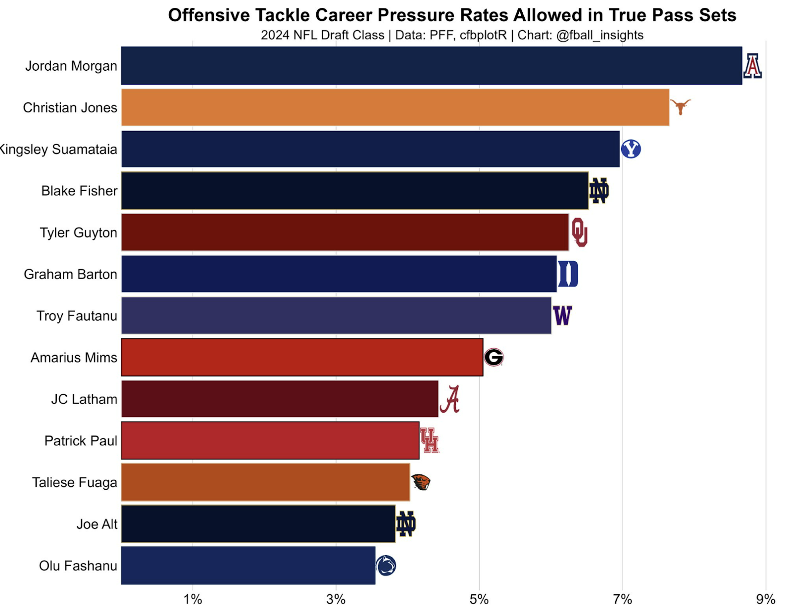

The 2024 NFL Draft Ultimate Deep Dive: An Offensive Bonanza
By Aakash Adhia | May 19, 2024

The 2024 NFL draft seems to be one of the most hyped up draft classes in recent memory and maybe all-time. There has been more coverage for this draft than a lot of previous draft classes, and for good reason. The strength of this draft is on offense as there are so many high-profile offensive players expected to go high in this draft. For NFL teams needing help on offense, this is the perfect draft to load up on offense and we could be seeing a lot more talented offenses going into the future once these players get drafted. There are an abundance of wide receivers(MHJ, Nabers, Odunze, etc) and o-line talent, especially at tackle(Joe Alt, Olu Fashanu,etc), and those are some of the most crucial positions in football outside of QB. I expect to see a bunch of receivers and tackles go in the first two rounds. Marvin Harrison Jr , Joe Alt , and Brock Bowers could be looked at as generational non-QB prospects going into this draft.
And speaking of quarterbacks, Caleb Williams and Drake Maye have been hyped up for 2 years and have been heralded as potential star QBs , and they are two of the most talented QB prospects we’ve seen in a while. Jayden Daniels had a breakout season this past year, and is a top 2 pick. JJ McCarthy is rising up draft boards quickly and , and could easily be a top 5-10 pick. Bo Nix and Michael Penix had Heisman-caliber seasons this past year, and resurrected their college careers after transferring from Auburn and Indiana respectively. The running backs, while they aren’t getting the attention and hype that Bijan Robinson and Jahmyr Gibbs got last year, could be in abundance and in need on Days 2 and 3 of the draft for teams to snag to upgrade their backfield.
About the Draft Class as a Whole on Offense
This draft class is insanely stacked at the top as there are so many offensive players scheduled to go in the first round of the draft this year. Most NFL draft Big Boards have offensive players making up over 50% of the top 100 and almost 60% of the top 50. A graph is listed below comparing the amount of offensive players in PFF’s top 100 big board for the last 4 drafts, and also by position as well.
I also provided a graph down below of the amount of offensive players taken in the top 10 from the 2014-2024 NFL draft, and the 2024 NFL draft had all offensive players with 5 quarterbacks, 3 wide receivers, and 2 offensive-linemen(tackles) go in the top 10, which is unprecedented. The 2021 draft was the only other draft in the past 10 years to come close to the amount of offensive players that went in this draft.
Here is a table showing the average prospect grades for each position in the 33rd Team’s top 100 rankings, and for the top 5 players at each offensive position. This shows that this draft class is insanely stacked at the top of each position, and there is a lot of depth at these positions as well.
Top 5 at each position:
Average grades in the top 100 Big Board:
Quarterbacks
This quarterback class could go down as one of the most historic quarterback classes of all time and it has been a highly controversial quarterback class to discuss. 4 quarterbacks are pretty much guaranteed to go in the top 10, which has never happened before in the history of the NFL draft. According to the 33rd team’s grades referenced above, the top 5 QBs all have pretty high prospect grades overall. According to the table down below on these QBs, 5 QBs have a 1st round grade, and 4 QBs have a final grade over 8.0 on a scale of 1-10, which is really impressive. The player grades in specific categories were taken using advanced analytic metrics from PFF and the final grades were determined from Dane Brugler(prominent draft analyst)’s player grade system. A lot of the quarterbacks in this class have various skill sets. Caleb Williams and Drake Maye seem to be the best quarterbacks in terms of ability to create, final prospect grade, deep ball passing, short passing , and raw grade especially given the fact that they had subpar supporting casts in 2023. Jayden Daniels has by far the best ability as a runner in the class as a runner as his scrambling ability is top notch. JJ McCarthy and Bo Nix are very good at throwing down the middle(intermediate) , ripping throws with anticipation. Penix’s accuracy at all levels of the field weren’t on the same level on average as the other quarterback prospects, and has the lowest ability as a runner.
Here is a graph showing the final grades of each QB prospect in the top 6 as a whole, and their pinpoint accuracy, which measures how often a quarterback threw the ball in a perfect position for his receiver to catch the ball and make a play. Caleb Williams and Drake Maye had the highest final grades, as both of them showed off their elite arm talent last year, and had to overcome bad situations around them as opposed to the other quarterbacks in this draft class. Caleb not only had the highest final grade, but also the highest pinpoint accuracy percentage , which indicates that he has the best chance of being a star quarterback in the NFL out of this group. Michael Penix Jr had the lowest final grade and lowest pinpoint accuracy percentage, which points to some potential concerns with him at the next level and Washington’s supporting cast may have elevated him last year.
I also wanted to provide my opinion on what my top quarterbacks are in this year’s draft into tiers after carefully analyzing these prospects the best I could.
My Quarterback Tiers
Tier 1: The Clear Top 2 since 2022 :
Caleb Williams (QB1) / Drake Maye(polarizing could see him being QB1 if he puts it all together)
Tier 2 : QBs that can easily be QB3 but also can be QB5/ Frustrating QBs to project and evaluate
JJ McCarthy(frustrating, but has NFL upside and room to grow )/Jayden Daniels(Skinny Fields, could be Tyrod Taylor or Marcus Mariota)
Tier 3: Starter potential/Older guys:
Bo Nix(Sean Payton’s dream QB)/Michael Penix Jr(solid arm and processor but not mobile questionable pocket presence accuracy and injury history)/ Spencer Rattler(highest ceiling and arm talent in this group but question marks)
Wide Receivers + Brock Bowers(The main attraction of this draft class)
This wide receiver class has a lot of depth and could go as one of the best of all time. These guys all have a variety of traits and skill sets that can translate very well to the league and this class has been a headache for draft experts, websites, Youtubers, and myself to rank. The rankings were all up and down. 7 receivers went in the first round this year, and 9 went in the first 34 picks which is unprecedented.
Starting with the cream of the crop in this class, Marvin Harrison Jr is one of the best and most hyped up wide receivers in some time. He is an all around polished receiver that doesn’t have a main weakness. He’s an elite route runner, has a great first step and release to freeze defensive backs, a contested catch machine, and he can also line up on the outside and in the slot. He is a 6’4 matchup nightmare for opposing defenses. He was doubled on 17% of his snaps and still managed to put up incredible production last year and averaged 3 yards per route run throughout his career , which is impressive. Malik Nabers seems like DJ Moore and Odell Beckham Jr mixed into one receiver with his incredible speed, route running, deep threat, and run after catch ability. He had 580 yards after the catch last year, 312 yards after contact, and 30 missed tackles forced, which shows his run after catch prowess. Rome Odunze is the king of contested catches and being a deep threat as he had a 75% contested catch rate last year and had a PFF grade of 96.3 on those catches, which led college football. He has one of the highest floors for a wide receiver in this class. Brock Bowers is one of the greatest tight end prospects of all time with 2.65 Yards per route run, and had an 84.4 PFF grade last year.
Here is a visualization below that shows the success rate of the top 3 wide receivers in this class on all routes they ran. This shows how much of a step ahead these receivers are from the rest of the class going into the NFL right now, especially with the defensive attention they got with them being doubled the most out of all receivers in the class. Most of the receivers have high success on all routes in the route tree, and are successful against man, zone, or press coverage.
Here is a table showing the route success rates of all the notable receivers in this year’s draft class. Overall, the numbers seem to be high across the board in man coverage and zone coverage, and the receivers in the class had the most success against zone coverage as the percentages are all above 70%. There are receivers that are even over 70% against press coverage like Rome Odunze, which is very impressive.
These are the individual route success rates of prominent receivers in the 2024 draft class. Slant routes, curls, outs, and dig routes are where the class is the strongest in.
These are my tiers for the wide receivers in this draft.
Tier 1: The Consensus Big 3 + Bowers
Marvin Harrison Jr(WR1 , safest projection to be a star WR), Nabers/Odunze/Bowers
Tier 2: Boom or Bust WR1s/High end WR2s/Can play on the Outside
Adonai Mitchell(may be taking a risk here but I’m betting on my eyes/glasses with this one), Ladd McConkey(my favorite WR)/Brian Thomas Jr
Tier 3: Have a Dominant trait/ High ceilings but need more refinement
Xavier Worthy(Speed + Deep threat, very close to putting him in Tier 2), Keon Coleman(Contested Catches + Hands)/Ricky Pearsall(Hands + Route running)/Xavier Legette(Athletic Burst/Explosiveness), Troy Franklin(Deep threat + YAC), Jermaine Burton(could be very good if his off-field issues don’t catch up with him, could be a major steal)
Tier 4: Safe projections / Floor guys / Solid weapons that have valuable skill sets
Jalen McMillan,
Roman Wilson/Jalynn Polk,
Javon Baker(Could be a steal if he’s more consistent with his hands and route running),
Malachi Corley(Might be right or I might be underestimating him a lot)/Johnny Wilson
Tier 5: Could be late round steals but still need polishing and development
Malik Washington/Tahj Washington/Brenden Rice/Jamari Thrash/ Jacob Cowing/ Luke McCaffrey/Ainias Smith
Offensive Linemen
The tackle depth in this class is staggering as there are 6-7 tackles projected to go in the first round across a bunch of mock drafts as of right now. This is a draft where the trenches will be invested in and teams will be desperate to give their quarterbacks much needed protection. Tackles are the primary strength of the offensive line group. Here is a graph showing the pressure rates allowed by the top tackles in the draft . It shows that there are a lot of premier tackles in this draft, more so than previous ones as 6 tackles have a pressure rate allowed of 5% or less in true pass sets.
There are 7 tackles that have a round 1 grade, and 10 tackles that have a final grade above 7 on a grading scale of 10, which is very impressive. The pass and run blocking grades for the top 10 tackle prospects are pretty high , which shows the versatility of the offensive tackles in the class. Pass blocking is the major strength for tackles in this draft according to the table, and that’s a positive predictor for success in the NFL , as teams pass a lot more now. The top 10 tackles are also very athletic with high RAS scores.
These are my tiers for the offensive linemen in the 2024 NFL draft:
Tier 1: The cream of the crop
Joe Alt/ JPJ and Graham Barton for interior offensive line
Tier 2: 1st round caliber tackles
Olu Fashanu/Amarius Mims/JC Latham/Troy Fautanu/ Taliese Fuaga
Tier 3: Solid but need work
Jordan Morgan/Blake Fisher/Kingsley Suamatia/Tyler Guyton
Running Backs
There isn’t as much hype for this running back class as there was last year or even in 2021, but I believe there are a lot of solid quality RBs in this draft. The running backs in this class have a ton of versatility as there are power backs, fast and shifty backs, and patient running backs with excellent vision. Here is a table showing all of the running backs yards per carry this year to show that this class might be going a bit under the radar.
The running backs in this class have pretty high running rates. They are able to still pull off explosive runs in stacked boxes, and generate a high yards per carry in light boxes as well. Here is a graph showing that.
Here are my tiers for the running backs in this class:
Tier 1: The Studs
Trey Benson(RB1)/Johnathan Brooks
Tier 2: Reliable and Trustable
Blake Corum/Braelon Allen(can be Derrick Henry but can also fall short)
Tier 3: Have legit upside to be an RB1
Jaylen Wright/ Kimani Vidal(underrated)/Marshawn Lloyd/Audric Estime
Tier 4: Solid RB2s/ Role-playing RBs
Will Shipley/Bucky Irving/Issac Guerendo/Ray Davis/Tyrone Tracy Jr
Conclusion
Overall, this draft class is stacked with offensive talent, and we could be looking back in a few years and talking about this draft as one of the greatest draft classes for offensive players ever. Wide receivers and offensive tackles are the true strengths in this draft, but there’s also an abundance of interior offensive linemen like Graham Barton and Jackson Powers Johnson. There is some topflight quarterback talent in this draft with Caleb Williams and Drake Maye leading the pack, and 6 quarterbacks ended up going in the top 12 picks, which is unprecedented. There were a total of 23 offensive players that went in the 1st round of the draft this year, which is a staggering amount. It will be interesting to see how people view this draft class in the future, and this could represent a historic moment in NFL history if a lot of these offensive players pan out. NFL teams are about to get more firepower with these players, so we could be seeing more fireworks in seasons to come.